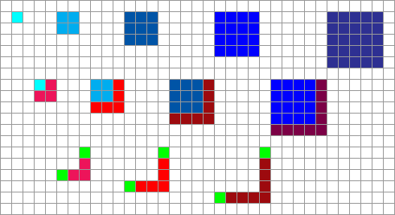

Вы здесь
Главные вкладки
О красоте математики
Взглянем на последовательность {1, 4, 9, 16, 25, …}. Можно заметить, что это квадраты: A[k] = k^2. Предположим, однако, что вы не увидели закономерности с первого взгляда. Есть ли способ предсказать следующий элемент последовательности? Да, можно найти разности между соседними элементами (разности первого порядка) и получить следующе:
{4 – 1, 9 – 4, 16 – 9, 25 – 16, …} = {3, 5, 7, 9, …}
Даже если вы не заметили, что это последовательные нечётные числа, сдаваться пока рано. Если вы найдете разности соседних чисел ещё раз (назовем это разностями второго порядка), то у вас получится следующее:
{5 – 3, 7 – 5, 9 – 7, …} = {2, 2, 2, …}
Если вы не сможете увидеть, что это повторяющаяся двойка, то в этом случае вы действительно безнадежны.
Но если вы предскажете, что и следующая разность второго порядка — это тоже 2, то это позволит предположить, что следующая разность первого порядка — 11, а следующий элемент исходной последовательности должен равняться 36. И это, как вы вскоре убедитесь, верно.
Копнув достаточно глубоко, можно обнаружить скрытую закономерность, внутреннюю структуру, устойчивые соотношения под переменчивой поверхностью.
Исходная последовательность была получена возведением в квадрат идущих друг за другом чисел. Однако нам удалось продолжить её, используя, казалось бы, совершенно другой подход — такой, который мы, в принципе, могли бы применить, даже не осознавая, что получаем квадраты. Можете ли вы доказать, что эти способы всегда равносильны? (Ведь до сих пор, как вы заметили, мы этого не доказывали, а только предполагали по индукции.) Можете ли вы, как любил спрашивать Пойя, упростить доказательство так, чтобы оно было ясным с первого взгляда?
По современным стандартам это очень простой пример, но это пример такой вещи, в поисках которой математики порой тратят целые жизни.
Радость математики заключается в том, что мы изобретаем некоторые объекты, а затем обнаруживаем, что они обладают всевозможными удивительными свойствами, которые мы не намеревались им прививать. Это как сконструировать тостер и увидеть, что ваше изобретение по какой-то неясной причине работает ещё и как реактивный ранец и mp3-плеер.
Числа открывали и переоткрывали множество раз на протяжении истории человечества. (Похоже, что на некоторых артефактах, датируемых 30000 г. до Р. Х., действительно находятся насечки, подозрительно напоминающие счетные.) Но я сомневаюсь, что кто-нибудь из людей, придумавших счёт, представлял себе, какой работой он обеспечит будущие поколения математиков. Или то возбуждение, которое однажды будет окружать Великую теорему Ферма или проблему факторизации в RSA-криптографии… И тем не менее всё это неявно уже содержится в определении натуральных чисел, как разности первого и второго порядка — в последовательности квадратов.
Именно это создает впечатление математической вселенной, существующей «где-то там», в платоновском Идеальном, которое люди скорее изучают, нежели создают. Наши определения переносят нас в различные участки Идеального, но мы не создаем там ничего самостоятельно. Так кажется, как минимум, потому, что мы не помним создания всех тех замечательных вещей, которые мы открыли. Первооткрыватели натуральных чисел отправились в Страну счёта, но не создали её, а последующие математики потратили столетия, изучая эту Страну и обнаруживая в ней всевозможные вещи, которые никто не мог даже попытаться себе представить в 30 000 г. до Р. Х.
Сказать, что люди «изобрели числа» (или неявную сущность, скрытую в числах) — всё равно, что заявить, будто Нил Армстронг своими руками слепил Луну. Вселенная существовала до того, как появились разумные существа, её изучающие, и это подразумевает, что физика предшествовала физикам. Это головоломка, я знаю; но если вы заявите, что физики были первыми, то все станет еще запутаннее, ведь возникновение физика требует, хм, достаточно много физики. Физика опирается на математику, так что последняя (или хотя бы та её часть, которая используется физикой) должна предшествовать математикам. Иначе не было бы структурированной вселенной, существующей достаточно долго, чтобы за миллиарды лет организмы, не знающие даже сложения, смогли эволюционировать в математиков.
Удивительно, что математика — это игра без разработчика, и, тем не менее, в неё в полной мере можно играть.
О, а вот и доказательство, что закономерность, которую мы обсуждали выше, верна:
(k + 1)^2 = k^2 + (2k + 1)
Или, более наглядно:

Думаете, задача квадратов настолько тривиальна, что не заслуживает вашего внимания? Думаете, что нет ничего удивительного в разностях первого и второго порядка? Думаете, они так очевидно подразумеваются в квадратах, что не могут считаться отдельным открытием? Тогда рассмотрите кубы:
1, 8, 27, 64…
А теперь — без прямых вычислений и каких-либо математических действий — можете ли вы с первого же взгляда сказать, какой будет разность третьего порядка?
И, конечно, когда вы узнаете, какова у последовательности кубов разность третьго порядка, вы осознаете, что по-другому и быть не могло.
- Короткая ссылка сюда: lesswrong.ru/175